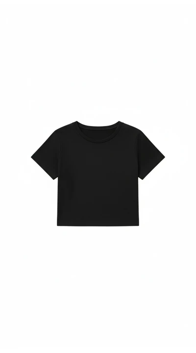

Choose who to edit
Language resolves the person and the clothing region—even in multi-person scenes.
A new interface for video virtual try-on / 2026
Instruction-Driven Video Virtual Try-On
without Auxiliary
Spatial Priors
01 Source video
02 Reference garment

03 Your instruction
“Replace the woman’s upper-body clothing with the reference garment.”
InstructVVT result
One video. One garment. One instruction.
No masks, poses, or parsing maps at inference.01 / The idea
Change the instructed person’s clothing while preserving the video’s structure and motion.
InstructVVT learns editing control directly from the source video, reference garment, and language. No handcrafted spatial priors are required at inference time.
Language resolves the person and the clothing region—even in multi-person scenes.
Reference conditioning carries appearance cues into the generated video.
Source-video conditioning anchors motion, scene structure, and unedited content.
Video virtual try-on requires precise garment replacement while preserving the source video’s spatial structure and temporal dynamics. Existing methods often rely on handcrafted spatial priors that can fail in unconstrained videos and discard useful context. InstructVVT instead operates on a source video, a reference garment, and a natural-language instruction. An MLLM produces semantic edit tokens for target disambiguation and structural preservation, while a lightweight garment pathway injects fine-grained visual details. A tailored try-on reward and DiffusionNFT post-training further align the generator with human preferences. Across ViViD-S and TripVVT-Bench, the model improves garment fidelity, source preservation, and temporal consistency without inference-time spatial priors.
02 / The method
A Diffusion Transformer combines instruction-resolved semantics, fine-grained garment appearance, and source-video cues.
An MLLM infers semantic edit tokens. A lightweight visual pathway supplies garment details, while source conditioning preserves the scene’s structure.
A try-on-specific reward guides DiffusionNFT post-training toward garment fidelity, structural preservation, and temporal consistency.
The reward achieves 65.5% pairwise agreement with human judgment, with Spearman correlation of 0.368 and Kendall correlation of 0.310.
Ablations examine garment-aware semantics, source conditioning, and reward alignment.
03 / The evidence
Evaluated on ViViD-S and TripVVT-Bench against open-source video try-on methods and general instruction-guided video editors.
TripVVT-Bench · 4-method study
CLIP-I ↑ · TripVVT-Bench
SSIM ↑ · TripVVT-Bench
LPIPS ↓ · TripVVT-Bench
Human study: 50 examples, 20 participants, and 1,000 votes across InstructVVT, MagicTryOn, UniVideo, and Kling 1.6. Values above are reported on TripVVT-Bench.
TripVVT-Bench · See the paper for complete evaluation protocols and results.
04 / In motion
Explore additional comparisons, ablations, and a failure case. Every video is an original supplementary result from the project.
05 / Build on this work
If you find this research useful, please consider citing our paper.
arXiv:2608.14070 ↗@misc{shao2026instructvvt,
title = {InstructVVT: Instruction-Driven Video Virtual Try-On
without Auxiliary Spatial Priors},
author = {Shao, Dingbao and Wu, Song and Chen, Xinyu and Wang, Qian
and Li, Jiahang and Jiang, Kuai and Lin, Jiang and Liu, Yuhang
and Chen, Ziyu and Li, Duo and Hu, Jiaxin and Gu, Shengrong
and Tang, Ziheng and Liu, Rongrong and Peng, Yanlun and Li, Liang
and Feng, Junlan and Jin, Lujia and Zhang, Ting and Yang, Jian
and Yi, Zili},
year = {2026},
eprint = {2608.14070},
archivePrefix = {arXiv},
primaryClass = {cs.CV},
url = {https://arxiv.org/abs/2608.14070}
}